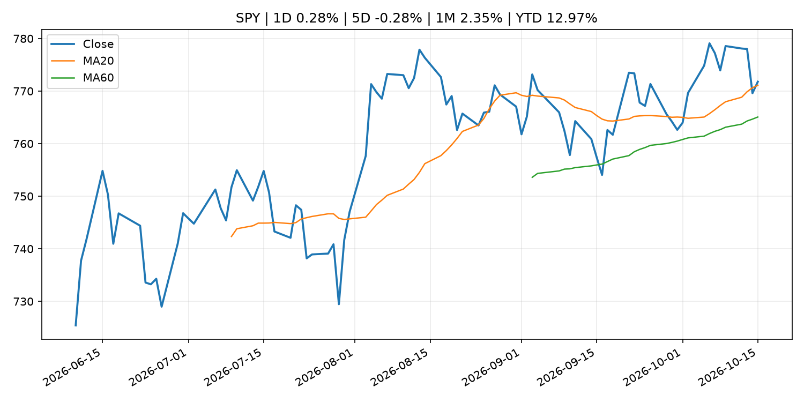
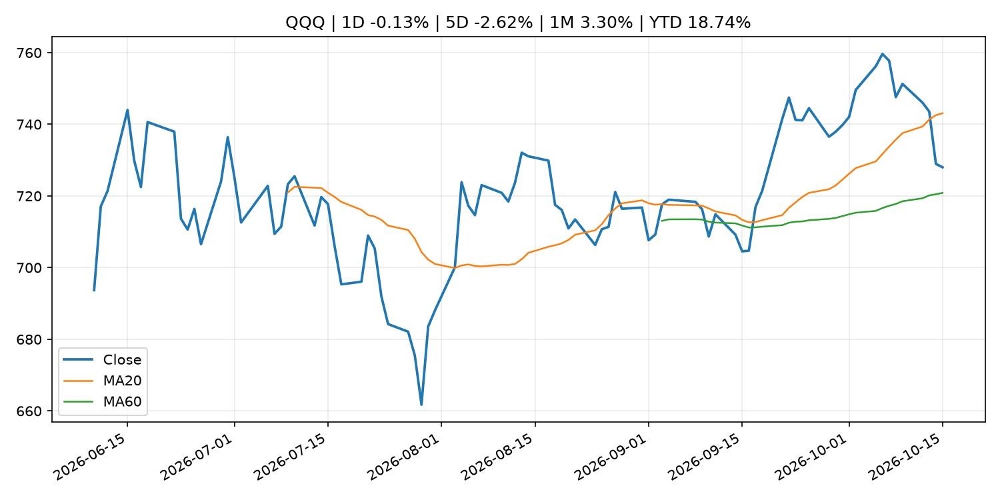
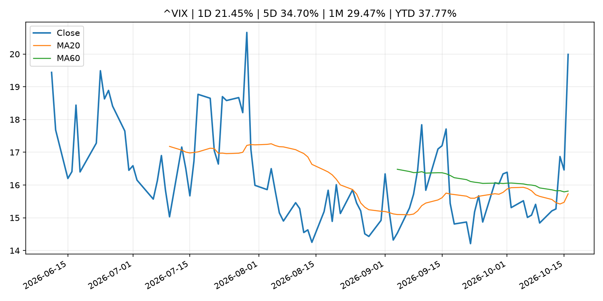
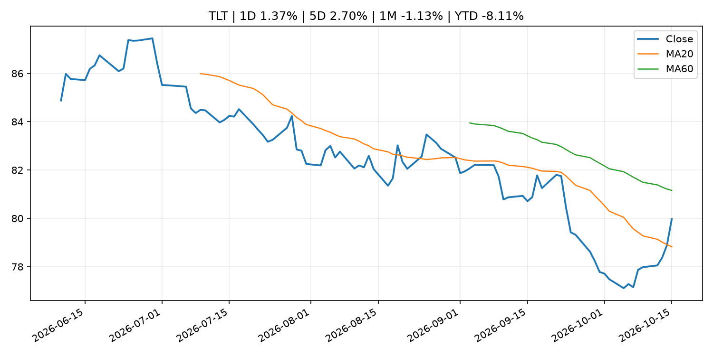
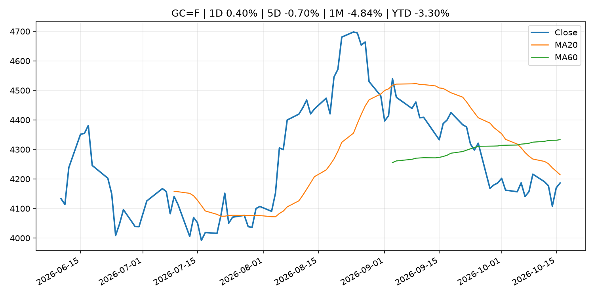
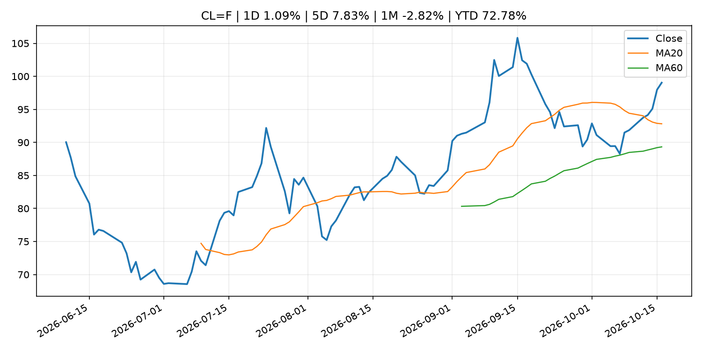
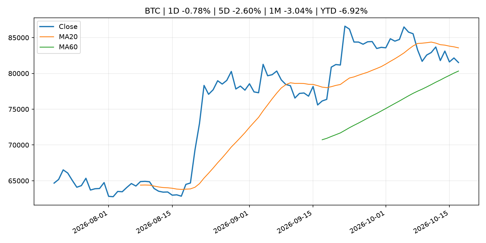
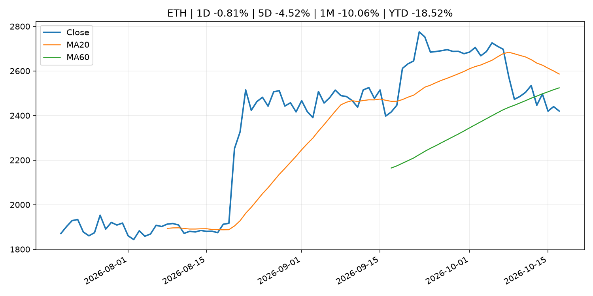
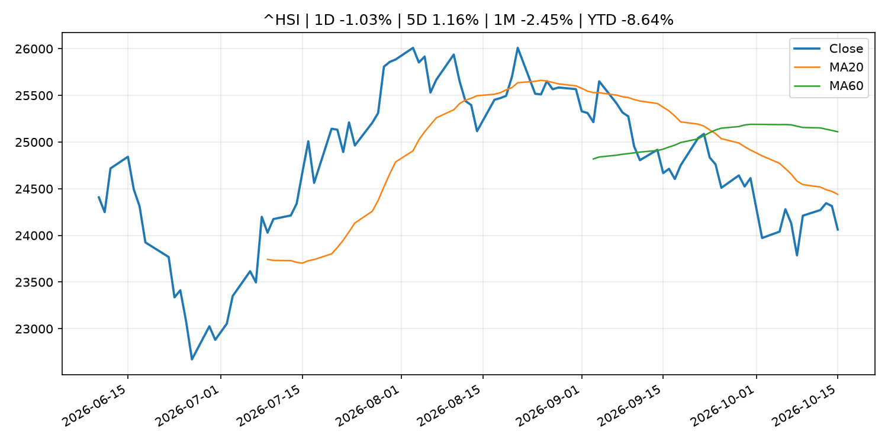

Global Macro Morning Briefing - 2026-10-17
Not financial advice / 非投资建议。
0. 今日总览
- 市场状态：unknown。市场信号不足，暂不判断明确状态。
- 今日三大主线：
- macro_data: The bond market shrugged off two inflation shocks. Why stock investors should pay attention.
- regulation: New SEC rules would fleece everyday investors to enrich Wall Street
- crypto_market_structure: Circle targets 40 new markets as stablecoin demand grows globally
- 一句话结论：今日晨报重点关注：这类宏观数据会直接改变市场对通胀、增长和政策路径的预期。；监管变化会改变行业盈利预期和资产风险溢价。。跨资产方面，SPY 1D 0.28%；QQQ 1D -0.13%；^VIX 1D 21.45%；TLT 1D 1.37%；GC=F 1D 0.40%；CL=F 1D 1.09%；BTC 1D -0.78%；ETH 1D -0.81%；市场信号不足，暂不判断明确状态。政策、通胀、利率、美元、美债、能源和加密监管仍是主要观察线索。所有结论仅基于公开数据与短摘要整理，不构成投资建议。
1. 隔夜跨资产市场
- 美股：SPY 1D 0.28%，QQQ 1D -0.13%，整体趋势需结合 VIX 和利率确认。
- 美债/美元：TLT 1D 1.37%，美元指数 1D -0.22%，是判断折现率压力的核心线索。
- 黄金/原油：黄金 1D 0.40%，原油 1D 1.09%，用于观察避险、通胀和地缘风险。
- 加密：BTC 1D -0.78%，ETH 1D -0.81%，关注是否独立于纳指走出加密自身行情。
- 港股/A股：恒生 1D -1.03%，沪深300/上证 1D n/a，重点看中国政策预期与人民币线索。
- 风险观察：关注后续数据是否确认当前跨资产信号。
US_EQUITY
| symbol | latest close | 1D | 5D | 1M | YTD | trend |
|---|---|---|---|---|---|---|
| SPY | 771.79 | 0.28% | -0.28% | 2.35% | 12.97% | uptrend |
| QQQ | 728.00 | -0.13% | -2.62% | 3.30% | 18.74% | range_bound |
| DIA | 521.18 | 1.08% | 1.86% | 1.16% | 7.76% | range_bound |
| IWM | 275.08 | 1.37% | -0.90% | -3.11% | 10.57% | strong_downtrend |
| VTI | 378.42 | 0.41% | -0.30% | 1.93% | 12.52% | range_bound |
US_MACRO_MARKET
| symbol | latest close | 1D | 5D | 1M | YTD | trend |
|---|---|---|---|---|---|---|
| ^VIX | 19.99 | 21.45% | 34.70% | 29.47% | 37.77% | range_bound |
| DX-Y.NYB | 101.78 | -0.22% | -0.42% | 1.56% | 3.41% | uptrend |
| TLT | 79.97 | 1.37% | 2.70% | -1.13% | -8.11% | range_bound |
| IEF | 90.35 | 0.71% | 1.01% | -0.42% | -5.96% | range_bound |
COMMODITIES
| symbol | latest close | 1D | 5D | 1M | YTD | trend |
|---|---|---|---|---|---|---|
| GC=F | 4,186.70 | 0.40% | -0.70% | -4.84% | -3.30% | downtrend |
| SI=F | 57.13 | 0.52% | -5.83% | -12.73% | -19.02% | strong_downtrend |
| CL=F | 99.04 | 1.09% | 7.83% | -2.82% | 72.78% | uptrend |
| BZ=F | 109.69 | 3.56% | 4.75% | 4.65% | 80.56% | strong_uptrend |
| NG=F | 3.12 | -3.68% | -3.20% | 7.45% | -13.85% | strong_uptrend |
| HG=F | 6.56 | 0.78% | -1.21% | -0.37% | 16.35% | range_bound |
HK_MARKET
| symbol | latest close | 1D | 5D | 1M | YTD | trend |
|---|---|---|---|---|---|---|
| ^HSI | 24,062.72 | -1.03% | 1.16% | -2.45% | -8.64% | downtrend |
| 0700.HK | 417.80 | 0.00% | -1.65% | -3.60% | -32.94% | strong_downtrend |
| 9988.HK | 108.80 | 2.26% | 1.68% | 2.45% | -26.98% | range_bound |
| 3690.HK | 75.70 | 0.33% | 5.87% | 1.68% | -27.63% | range_bound |
| 1810.HK | 26.66 | -1.55% | 2.70% | 1.83% | -33.81% | range_bound |
| 1211.HK | 73.75 | 1.10% | -2.45% | -6.88% | -25.32% | strong_downtrend |
CRYPTO
| symbol | latest close | 1D | 5D | 1M | YTD | trend |
|---|---|---|---|---|---|---|
| BTC | 81,517.74 | -0.78% | -2.60% | -3.04% | -6.92% | range_bound |
| ETH | 2,420.09 | -0.81% | -4.52% | -10.06% | -18.52% | range_bound |
| SOLANA | 104.33 | -0.96% | -6.22% | -14.54% | -16.21% | range_bound |
| BINANCECOIN | 720.12 | -1.20% | -4.43% | -7.32% | -16.53% | range_bound |
| RIPPLE | 1.31 | -1.83% | -7.09% | -16.51% | -28.87% | range_bound |
2. 今日最重要的 10 条新闻
1. The bond market shrugged off two inflation shocks. Why stock investors should pay attention.
- 来源：MarketWatch Top Stories
- 时间：2026-10-16T21:30:00+00:00
- 地区：US
- 事件类型：macro_data
- 重要性层级：Tier 1
- 一句话摘要：Hot CPI and PPI data should have pushed Treasury yields higher. Instead, bond buyers stepped in to suggest yields have risen high enough to become attractive for investors.
- 为什么重要：这类宏观数据会直接改变市场对通胀、增长和政策路径的预期。
- 可能影响：主要影响 DXY，方向为 positive，强度 high；通胀压力可能推高政策利率预期并支撑美元。
- 资产：DXY 方向：positive 强度：high 原因：通胀压力可能推高政策利率预期并支撑美元。
- 资产：TLT 方向：negative 强度：high 原因：通胀上行通常推升收益率、压低长债价格。
- 资产：QQQ 方向：negative 强度：high 原因：更高利率对成长股估值折现率不利。
- 资产：SPY 方向：mixed 强度：medium 原因：名义增长可能支撑收入，但更高利率压制估值。
- 资产：GC=F 方向：mixed 强度：medium 原因：通胀对黄金是支撑，但实际利率上行会形成压力。
- 资产：BTC 方向：mixed 强度：medium 原因：抗通胀叙事和流动性收紧可能相互抵消。
- 原文链接：https://www.marketwatch.com/story/the-bond-market-shrugged-off-two-inflation-shocks-why-stock-investors-should-pay-attention-5da4f771?mod=mw_rss_topstories
2. New SEC rules would fleece everyday investors to enrich Wall Street
- 来源：MarketWatch Top Stories
- 时间：2026-10-16T21:21:00+00:00
- 地区：US
- 事件类型：regulation
- 重要性层级：Tier 2
- 一句话摘要：New proposals from the Securities and Exchange Commission will tilt the scales in favor of Wall Street and against a huge group of retail investors.
- 为什么重要：监管变化会改变行业盈利预期和资产风险溢价。
- 可能影响：主要影响 BTC，方向为 mixed，强度 high；加密监管或 ETF 进展会改变 BTC 的资金流和风险溢价。
- 资产：BTC 方向：mixed 强度：high 原因：加密监管或 ETF 进展会改变 BTC 的资金流和风险溢价。
- 资产：ETH 方向：mixed 强度：high 原因：监管框架会影响 ETH 产品化和机构参与度。
- 资产：COIN 方向：mixed 强度：medium 原因：监管清晰度和执法风险会影响交易平台估值。
- 资产：crypto market 方向：mixed 强度：high 原因：信息影响整个加密市场结构，但方向取决于细节。
- 原文链接：https://www.marketwatch.com/story/new-sec-rules-would-fleece-everyday-investors-to-enrich-wall-street-0a00fe03?mod=mw_rss_topstories
3. Circle targets 40 new markets as stablecoin demand grows globally
- 来源：CoinDesk
- 时间：2026-10-16T10:54:35+00:00
- 地区：global
- 事件类型：crypto_market_structure
- 重要性层级：Tier 2
- 一句话摘要：Circle targets 40 new markets as stablecoin demand grows globally
- 为什么重要：加密市场结构和监管变化会影响 BTC、ETH 及相关股票的风险溢价。
- 可能影响：主要影响 BTC，方向为 mixed，强度 high；加密监管或 ETF 进展会改变 BTC 的资金流和风险溢价。
- 资产：BTC 方向：mixed 强度：high 原因：加密监管或 ETF 进展会改变 BTC 的资金流和风险溢价。
- 资产：ETH 方向：mixed 强度：high 原因：监管框架会影响 ETH 产品化和机构参与度。
- 资产：COIN 方向：mixed 强度：medium 原因：监管清晰度和执法风险会影响交易平台估值。
- 资产：crypto market 方向：mixed 强度：high 原因：信息影响整个加密市场结构，但方向取决于细节。
- 原文链接：https://www.coindesk.com/business/2026/10/16/circle-targets-40-new-markets-as-stablecoin-demand-grows-globally
4. Federal Reserve Board announces termination of enforcement actions with Gardner Bancshares, Inc. and Small Business Bank
- 来源：Federal Reserve Press Releases
- 时间：2026-10-16T15:00:00+00:00
- 地区：US
- 事件类型：regulation
- 重要性层级：Tier 2
- 一句话摘要：Federal Reserve Board announces termination of enforcement actions with Gardner Bancshares, Inc. and Small Business Bank
- 为什么重要：监管变化会改变行业盈利预期和资产风险溢价。
- 可能影响：可能影响利率、汇率、风险资产或大宗商品预期，但当前公开信息不足以判断明确方向。
- 资产：暂无明确资产映射
- 方向：unknown
- 强度：low
- 原因：公开信息不足以判断方向。
- 原文链接：https://www.federalreserve.gov/newsevents/pressreleases/enforcement20261016a.htm
5. Speech by Board Member KOEDA in Kumamoto (Economic Activity, Prices, and Monetary Policy in Japan)
- 来源：Bank of Japan Announcements
- 时间：2026-10-15T10:30:00+09:00
- 地区：Japan
- 事件类型：central_bank_speech
- 重要性层级：Tier 2
- 一句话摘要：Speech by Board Member KOEDA in Kumamoto (Economic Activity, Prices, and Monetary Policy in Japan)
- 为什么重要：央行官员表态可能影响市场对下一次会议的定价。
- 可能影响：可能影响利率、汇率、风险资产或大宗商品预期，但当前公开信息不足以判断明确方向。
- 资产：暂无明确资产映射
- 方向：unknown
- 强度：low
- 原因：公开信息不足以判断方向。
- 原文链接：http://www.boj.or.jp/en/about/press/koen_2026/ko261015a.htm
6. Your Social Security check will rise an average of $75 a month — will it be able to keep up with inflation?
- 来源：MarketWatch Top Stories
- 时间：2026-10-16T19:45:00+00:00
- 地区：US
- 事件类型：other
- 重要性层级：Tier 3
- 一句话摘要：The 3.6% COLA for 2027 is aimed at helping more than 68 million beneficiaries keep pace with the cost of living
- 为什么重要：这条信息暂未匹配到重大宏观、政策或市场事件，更适合作为背景跟踪。
- 可能影响：主要影响 DXY，方向为 positive，强度 high；通胀压力可能推高政策利率预期并支撑美元。
- 资产：DXY 方向：positive 强度：high 原因：通胀压力可能推高政策利率预期并支撑美元。
- 资产：TLT 方向：negative 强度：high 原因：通胀上行通常推升收益率、压低长债价格。
- 资产：QQQ 方向：negative 强度：high 原因：更高利率对成长股估值折现率不利。
- 资产：SPY 方向：mixed 强度：medium 原因：名义增长可能支撑收入，但更高利率压制估值。
- 资产：GC=F 方向：mixed 强度：medium 原因：通胀对黄金是支撑，但实际利率上行会形成压力。
- 资产：BTC 方向：mixed 强度：medium 原因：抗通胀叙事和流动性收紧可能相互抵消。
- 原文链接：https://www.marketwatch.com/story/social-securitys-cola-will-be-3-6-in-2027-as-inflation-persists-f7c9dff2?mod=mw_rss_topstories
7. Nowhere to hide: Tech selloff hits software and chip stocks alike
- 来源：MarketWatch Top Stories
- 时间：2026-10-16T21:59:00+00:00
- 地区：US
- 事件类型：other
- 重要性层级：Tier 3
- 一句话摘要：The software and semiconductor sectors haven’t been trading in tandem much this year, but they collectively fell Friday as AI and interest-rate fears hit the market.
- 为什么重要：这条信息暂未匹配到重大宏观、政策或市场事件，更适合作为背景跟踪。
- 可能影响：更偏背景信息，短期市场影响可能有限。
- 资产：暂无明确资产映射
- 方向：unknown
- 强度：low
- 原因：公开信息不足以判断方向。
- 原文链接：https://www.marketwatch.com/story/nowhere-to-hide-tech-selloff-hits-software-and-chip-stocks-alike-6d96773c?mod=mw_rss_topstories
3. 政策与央行观察
1. New SEC rules would fleece everyday investors to enrich Wall Street
- 来源：MarketWatch Top Stories
- 时间：2026-10-16T21:21:00+00:00
- 地区：US
- 事件类型：regulation
- 重要性层级：Tier 2
- 一句话摘要：New proposals from the Securities and Exchange Commission will tilt the scales in favor of Wall Street and against a huge group of retail investors.
- 为什么重要：监管变化会改变行业盈利预期和资产风险溢价。
- 可能影响：主要影响 BTC，方向为 mixed，强度 high；加密监管或 ETF 进展会改变 BTC 的资金流和风险溢价。
- 资产：BTC 方向：mixed 强度：high 原因：加密监管或 ETF 进展会改变 BTC 的资金流和风险溢价。
- 资产：ETH 方向：mixed 强度：high 原因：监管框架会影响 ETH 产品化和机构参与度。
- 资产：COIN 方向：mixed 强度：medium 原因：监管清晰度和执法风险会影响交易平台估值。
- 资产：crypto market 方向：mixed 强度：high 原因：信息影响整个加密市场结构，但方向取决于细节。
- 原文链接：https://www.marketwatch.com/story/new-sec-rules-would-fleece-everyday-investors-to-enrich-wall-street-0a00fe03?mod=mw_rss_topstories
2. Circle targets 40 new markets as stablecoin demand grows globally
- 来源：CoinDesk
- 时间：2026-10-16T10:54:35+00:00
- 地区：global
- 事件类型：crypto_market_structure
- 重要性层级：Tier 2
- 一句话摘要：Circle targets 40 new markets as stablecoin demand grows globally
- 为什么重要：加密市场结构和监管变化会影响 BTC、ETH 及相关股票的风险溢价。
- 可能影响：主要影响 BTC，方向为 mixed，强度 high；加密监管或 ETF 进展会改变 BTC 的资金流和风险溢价。
- 资产：BTC 方向：mixed 强度：high 原因：加密监管或 ETF 进展会改变 BTC 的资金流和风险溢价。
- 资产：ETH 方向：mixed 强度：high 原因：监管框架会影响 ETH 产品化和机构参与度。
- 资产：COIN 方向：mixed 强度：medium 原因：监管清晰度和执法风险会影响交易平台估值。
- 资产：crypto market 方向：mixed 强度：high 原因：信息影响整个加密市场结构，但方向取决于细节。
- 原文链接：https://www.coindesk.com/business/2026/10/16/circle-targets-40-new-markets-as-stablecoin-demand-grows-globally
3. Federal Reserve Board announces termination of enforcement actions with Gardner Bancshares, Inc. and Small Business Bank
- 来源：Federal Reserve Press Releases
- 时间：2026-10-16T15:00:00+00:00
- 地区：US
- 事件类型：regulation
- 重要性层级：Tier 2
- 一句话摘要：Federal Reserve Board announces termination of enforcement actions with Gardner Bancshares, Inc. and Small Business Bank
- 为什么重要：监管变化会改变行业盈利预期和资产风险溢价。
- 可能影响：可能影响利率、汇率、风险资产或大宗商品预期，但当前公开信息不足以判断明确方向。
- 资产：暂无明确资产映射
- 方向：unknown
- 强度：low
- 原因：公开信息不足以判断方向。
- 原文链接：https://www.federalreserve.gov/newsevents/pressreleases/enforcement20261016a.htm
4. Speech by Board Member KOEDA in Kumamoto (Economic Activity, Prices, and Monetary Policy in Japan)
- 来源：Bank of Japan Announcements
- 时间：2026-10-15T10:30:00+09:00
- 地区：Japan
- 事件类型：central_bank_speech
- 重要性层级：Tier 2
- 一句话摘要：Speech by Board Member KOEDA in Kumamoto (Economic Activity, Prices, and Monetary Policy in Japan)
- 为什么重要：央行官员表态可能影响市场对下一次会议的定价。
- 可能影响：可能影响利率、汇率、风险资产或大宗商品预期，但当前公开信息不足以判断明确方向。
- 资产：暂无明确资产映射
- 方向：unknown
- 强度：low
- 原因：公开信息不足以判断方向。
- 原文链接：http://www.boj.or.jp/en/about/press/koen_2026/ko261015a.htm
4. 市场异动与图表
- VIX 上涨 21.45%
- TLT 上涨 1.37%
- Oil 上涨 1.09%
SPY

QQQ

^VIX

TLT

GC=F

CL=F

BTC

ETH

^HSI

5. 华尔街与机构公开观点
- 暂无可靠公开观点。
6. 今日重点关注
- 经济数据：经济数据：暂无可靠公开日历数据；如配置经济日历源后可自动填充。
- 央行讲话：央行讲话：暂无可靠公开日历数据；重点跟踪 Fed、ECB、BoJ、PBOC 官网 RSS。
- 财报：财报：暂无可靠数据。
- 政策事件：政策事件：暂无可靠数据。
- 风险提醒：风险提醒：关注数据源失败项、突发地缘风险、利率和美元的二阶反应。
7. 英文金融表达与宏观概念
- inflation expectations：通胀预期，指家庭、企业或市场对未来通胀的预估。 例句：Inflation expectations can shape wage bargaining and bond yields.
- real yield：实际收益率，名义利率扣除通胀预期后的收益率。 例句：Gold often reacts more to real yields than nominal yields.
- risk-off：避险模式，资金偏向美元、国债、黄金等防御资产。 例句：A geopolitical shock can push markets into risk-off mode.
- market structure：市场结构，指交易、托管、清算、ETF、监管等制度安排。 例句：Crypto market structure rules can affect institutional participation.
- terminal rate：终端利率，市场预期本轮加息周期的最高政策利率。 例句：A higher terminal rate can pressure growth stocks.
- soft landing：软着陆，指通胀回落而经济避免明显衰退。 例句：Markets often rally when data support a soft landing.
8. 背景材料
- Nowhere to hide: Tech selloff hits software and chip stocks alike（MarketWatch Top Stories，other）：The software and semiconductor sectors haven’t been trading in tandem much this year, but they collectively fell Friday as AI and interest-rate fears hit the market.
- I’m 63 and diagnosed with lymphoma. Should I take my Social Security next year?（MarketWatch Top Stories，other）：“My plan is to continue working as long as I’m able to do so and invest my Social Security benefits while I’m still earning a paycheck.”
- Are we spending our retirement money in the right order? Our plan is: Social Security, annuities, cash — then IRA.（MarketWatch Top Stories，other）：Spending all your cash first can make your income surge in later years.
- Your Social Security check will rise an average of $75 a month — will it be able to keep up with inflation?（MarketWatch Top Stories，other）：The 3.6% COLA for 2027 is aimed at helping more than 68 million beneficiaries keep pace with the cost of living
- U.S. presses China on Mastercard, Citigroup market access in bilateral Bangkok talks, official says（CNBC Economy，other）：The U.S. raised market access issues for Mastercard and Citigroup in China during bilateral meetings in Bangkok this week, a U.S. Treasury official says.
- Quantum Alliance forms amid warnings 6.4 million bitcoin face future quantum threat（CoinDesk，other）：Quantum Alliance forms amid warnings 6.4 million bitcoin face future quantum threat
- Altcoins outpace bitcoin as celestia jumps 16%, Warsh silent on interest-rate plans（CoinDesk，other）：Altcoins outpace bitcoin as celestia jumps 16%, Warsh silent on interest-rate plans
- Scammer gets scammed in Ledger spy-chip exploit, loses almost $5 million in bitcoin（CoinDesk，other）：Scammer gets scammed in Ledger spy-chip exploit, loses almost $5 million in bitcoin
- Live updates: Bitcoin dips to $81,000 as stocks slide, VIX soars ahead of Black Monday anniversary（CoinDesk，other）：Live updates: Bitcoin dips to $81,000 as stocks slide, VIX soars ahead of Black Monday anniversary
- BOJ Current Account Balances by Sector (Sept.)（Bank of Japan Announcements，other）：BOJ Current Account Balances by Sector (Sept.)
- XRP has failed to make holders rich like bitcoin and ether. Here’s why（CoinDesk，other）：XRP has failed to make holders rich like bitcoin and ether. Here’s why
- Bitcoin buyers snap up a brief drop below $80,000 as Asian stocks rebound（CoinDesk，other）：Bitcoin buyers snap up a brief drop below $80,000 as Asian stocks rebound
- How Brooklyn prosecutors and the FBI took down a massive crypto fraud network targeting Russian speakers（CoinDesk，other）：How Brooklyn prosecutors and the FBI took down a massive crypto fraud network targeting Russian speakers
- Bitcoin, copper, stocks, yields all fall; gold rises（CoinDesk，other）：Bitcoin, copper, stocks, yields all fall; gold rises
- Altcoins lead crypto declines as Asian stocks drop; bitcoin little changed since midnight（CoinDesk，other）：Altcoins lead crypto declines as Asian stocks drop; bitcoin little changed since midnight
- Live updates: Bitcoin bounces back to $82,000 after first fall below $80,000 in one month（CoinDesk，other）：Live updates: Bitcoin bounces back to $82,000 after first fall below $80,000 in one month
- BlackRock's Fink names a U.S. recession trigger, sounds alarm over $40 trillion national debt（CoinDesk，other）：BlackRock's Fink names a U.S. recession trigger, sounds alarm over $40 trillion national debt
- Nearly $1 billion in crypto bets liquidated as bitcoin, ether and XRP slide（CoinDesk，other）：Nearly $1 billion in crypto bets liquidated as bitcoin, ether and XRP slide
- Summary of the "Meeting on Market Operations" (October 2026)（Bank of Japan Announcements，other）：Summary of the "Meeting on Market Operations" (October 2026)
9. 数据源、失败项与免责声明
- 采集时间：2026-10-17T00:10:37
- 数据源：公开 RSS、Yahoo Finance、CoinGecko、AKShare、FRED、SEC data.sec.gov，以及用户自有 inputs/reports 文件。
- 合规说明：不绕过 WSJ、Bloomberg、FT、Reuters 等付费墙；对付费媒体只使用公开 RSS 标题、摘要、链接和发布时间。
- 免责声明：Not financial advice / 非投资建议。本项目仅供个人学习、研究和信息整理，不构成投资建议、交易建议或任何收益承诺。
- 失败或跳过的数据源：
- crypto data failed coin=dogecoin
- China market data failed symbol=上证指数: empty dataframe
- China market data failed symbol=深证成指: empty dataframe
- China market data failed symbol=创业板指: empty dataframe
- China market data failed symbol=沪深300: empty dataframe
- China market data failed symbol=中证500: empty dataframe
- China market data failed symbol=科创50: empty dataframe
- FRED_API_KEY not set; skipping FRED macro series
- SEC failed cik=0000320193
- SEC failed cik=0000789019
- SEC failed cik=0001045810
- SEC failed cik=0001318605
- SEC failed cik=0001577552